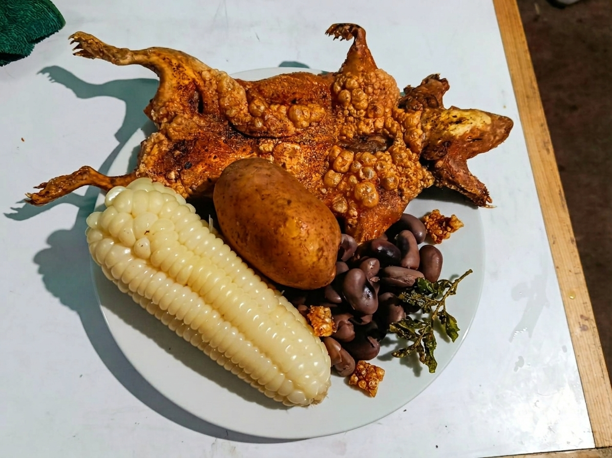
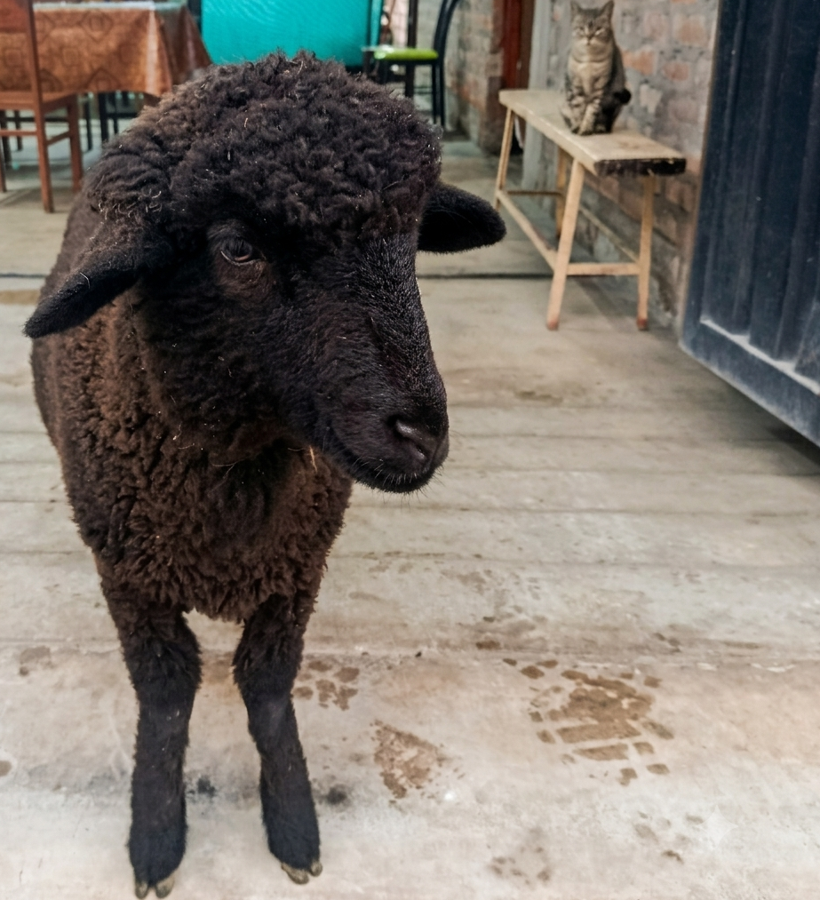

El auténtico e inigualable sabor tradicional de Characato
Ver EspecialidadesEn La Judith, nos enorgullece preservar las auténticas costumbres culinarias de Arequipa. Preparamos cada plato respetando las recetas tradicionales heredadas, utilizando ingredientes frescos y el toque único de nuestra campiña.
Nuestra especialidad absoluta son los cuyes, preparados con el crocante perfecto y acompañados siempre de lo mejor de nuestra tierra.




Disfruta del mejor ambiente rústico y campestre en Characato, Arequipa.
Encuéntranos en nuestras redes sociales oficiales para ver horarios y ubicaciones exactas: